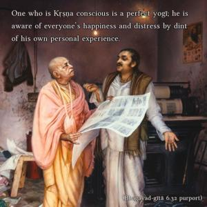
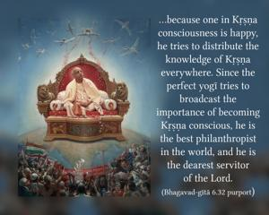

He is a perfect yogī who, by comparison to his own self, sees the true equality of all beings, in both their happiness and their distress, O Arjuna!


One who is Kṛṣṇa conscious is a perfect yogī; he is aware of everyone’s happiness and distress by dint of his own personal experience. The cause of the distress of a living entity is forgetfulness of his relationship with God. And the cause of happiness is knowing Kṛṣṇa to be the supreme enjoyer of all the activities of the human being, the proprietor of all lands and planets, and the sincerest friend of all living entities. The perfect yogī knows that the living being who is conditioned by the modes of material nature is subjected to the threefold material miseries due to forgetfulness of his relationship with Kṛṣṇa. And because one in Kṛṣṇa consciousness is happy, he tries to distribute the knowledge of Kṛṣṇa everywhere. Since the perfect yogī tries to broadcast the importance of becoming Kṛṣṇa conscious, he is the best philanthropist in the world, and he is the dearest servitor of the Lord. Na ca tasmān manuṣyeṣu kaścin me priya-kṛttamaḥ (Bg. 18.69). In other words, a devotee of the Lord always looks to the welfare of all living entities, and in this way he is factually the friend of everyone. He is the best yogī because he does not desire perfection in yoga for his personal benefit, but tries for others also. He does not envy his fellow living entities. Here is a contrast between a pure devotee of the Lord and a yogī interested only in his personal elevation. The yogī who has withdrawn to a secluded place in order to meditate perfectly may not be as perfect as a devotee who is trying his best to turn every man toward Kṛṣṇa consciousness.